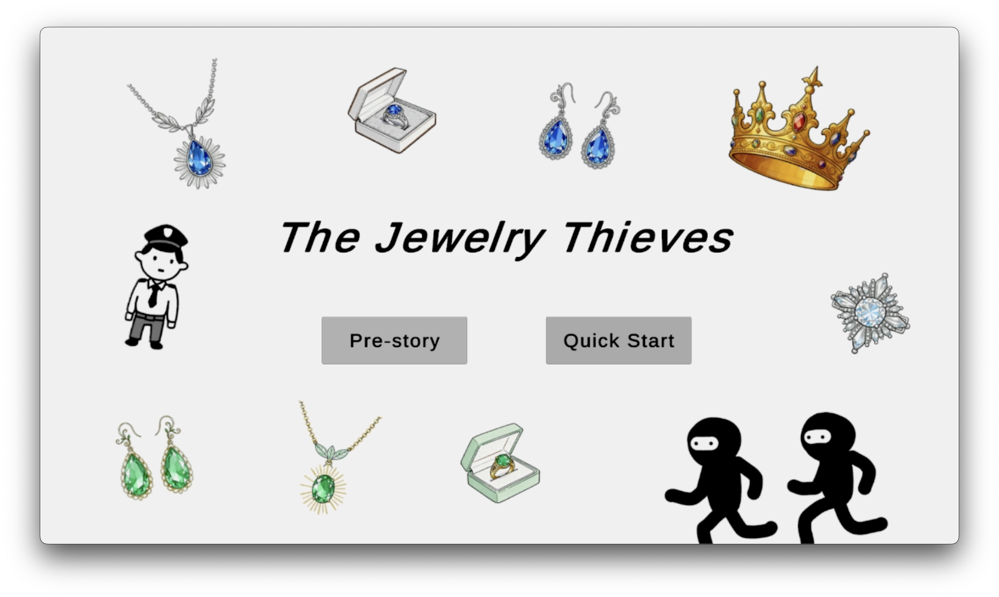
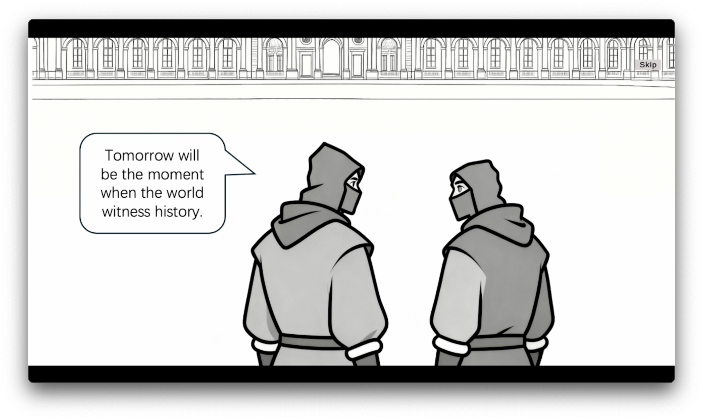
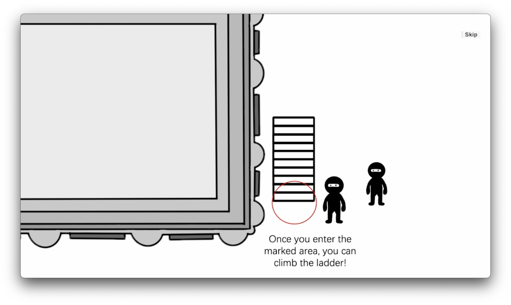
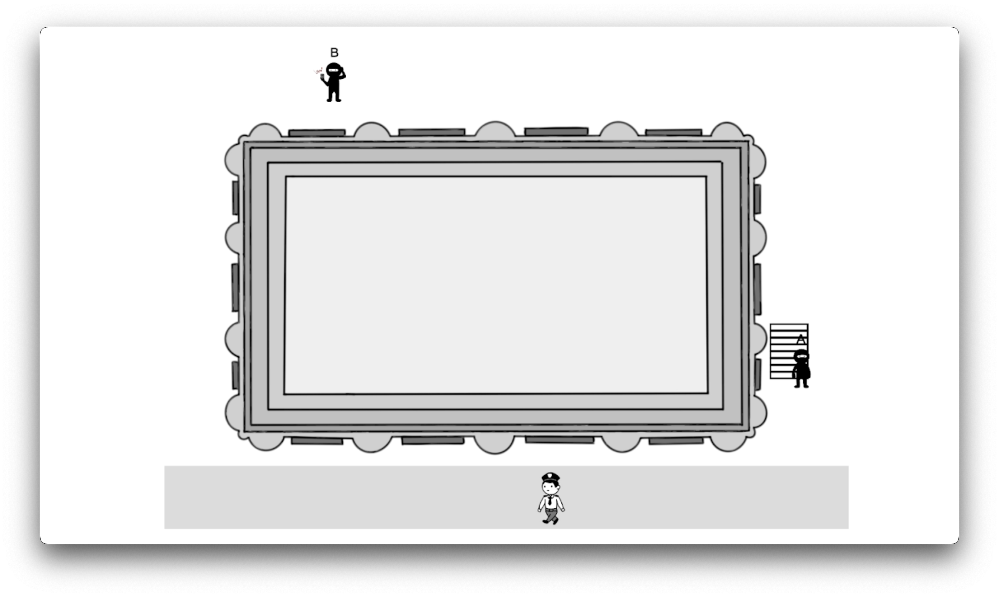
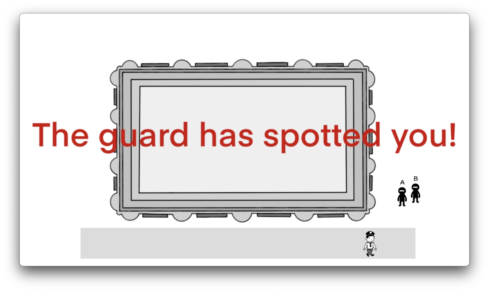
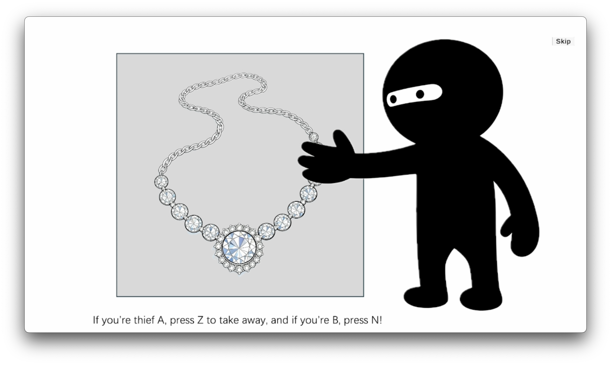
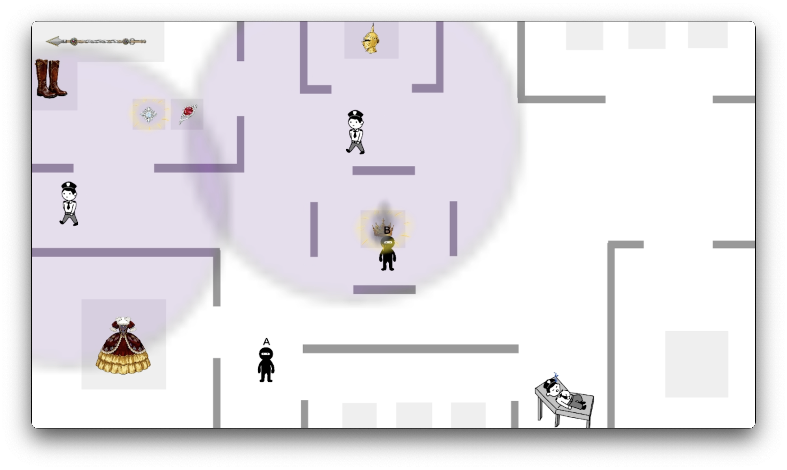
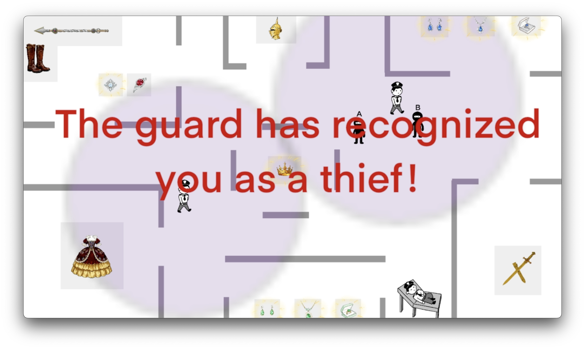
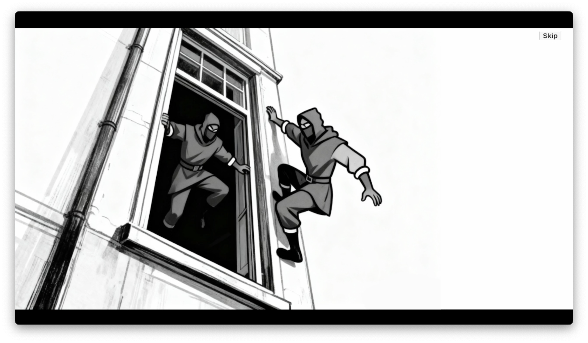
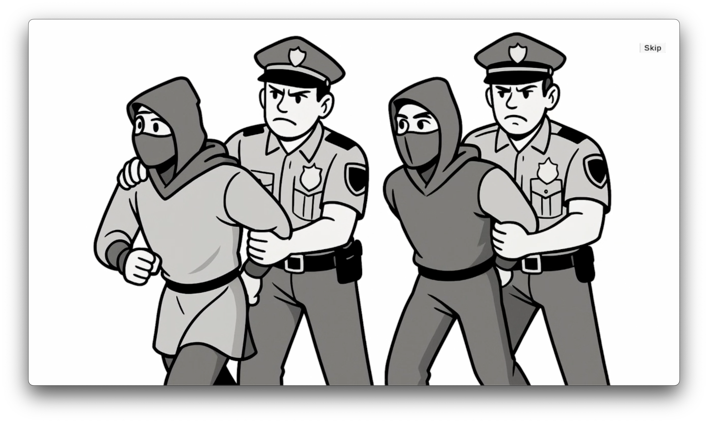

Cover 封面

A two-player Unity 2D game inspired by the Louvre theft incident in France, combining cooperative gameplay, narrative framing, and success-versus-failure outcomes within a restrained black, white, and gray visual system. 一款受法国卢浮宫失窃事件启发的双人 Unity 2D 游戏，结合协作玩法、叙事表达以及成功与失败两种结果，并以克制的黑白灰视觉系统呈现整体氛围。
Screen 01 页面 01
The opening introduces the premise, tone, and fictional setup of the game through a cover sequence and narrative background. This first screen frames the player experience before the gameplay begins. 开场部分通过封面画面与背景叙事介绍游戏的前提、氛围和虚构设定，为正式进入玩法之前建立整体体验框架。
Video 视频
This game is inspired by the Louvre museum theft incident in France and is designed as a two-player cooperative experience. Players act as two thieves with different responsibilities: one player can choose to be the thief who places a ladder by the window, while the other distracts the guards. Through coordination, the two players enter the Louvre, steal the designated treasure, and escape through the window to complete the mission successfully.
The project is not intended to glamorize theft. Rather than making stealing look cool, the game uses entertainment as a way to remind players that many contemporary museums and galleries may still require stronger security systems.
Built as a Unity 2D game, the project contains two levels. Each level includes both a tutorial and a background story segment, making the overall experience relatively narrative-driven. Visually, the game is built primarily in black, white, and gray tones so that the colors of the treasures stand out more clearly as focal points.
这个游戏基于法国卢浮宫失窃事件展开设计，是一个 双人协作体验。玩家分别扮演两名职责不同的大盗：一名负责在窗边搭梯子，另一名负责引开保安。两位玩家需要通过配合潜入卢浮宫，偷取指定宝物，并从窗户逃离，才能成功完成任务。
这个项目的目的 并不是美化盗窃，也不是想把偷盗塑造成很酷的事情，而是希望通过娱乐性的互动形式提醒人们：当代许多博物馆与艺术馆的安保系统仍有待加强。
该项目使用 Unity 2D 制作，共包含两个关卡。每个关卡都配有教程和背景故事，因此整体具有较强的叙事性。视觉上主要采用 黑、白、灰 作为基调，以突出宝物本身的颜色，使其成为画面中的视觉焦点。
Images 图片


Screen 02 页面 02
Level 1 introduces the first playable scenario through tutorial guidance, a successful path, and a failed path. Presenting these states side by side makes the interaction logic and player feedback easier to understand. 第一关通过教程流程、成功路径和失败路径来展示第一个可玩场景。将这几种状态并列呈现，可以更清楚地说明交互逻辑和玩家反馈机制。
Videos 视频
Instructional flow introducing the first level and its core actions. 展示第一关的教学流程以及核心操作。
Example of a successful completion path in the first level. 展示第一关顺利完成任务的路径。
Example of failure feedback and an unsuccessful outcome in the first level. 展示第一关失败后的反馈与未完成任务的结果。
Images 图片



Screen 03 页面 03
Level 2 continues the same tutorial-success-failure structure while extending the narrative and gameplay progression. This makes it easier to compare player outcomes across the two levels. 第二关延续了教程、成功与失败并置的结构，同时进一步推进叙事和玩法发展，使两个关卡之间的结果对比更加清晰。
Videos 视频
Instructional flow introducing the second level and its mechanics. 展示第二关的教学流程以及玩法机制。
Example of successful progression and completion in the second level. 展示第二关成功推进并完成任务的过程。
Example of failure feedback and a lost attempt in the second level. 展示第二关失败反馈以及任务未完成的状态。
Images 图片



Screen 04 页面 04
The final screen presents the two ending states together: successful completion and overall mission failure. This closing comparison makes the result of player coordination immediately visible. 最后一部分并列展示两种结局：任务成功与整体失败。通过这种收束式对比，玩家协作的结果能够被直接看见。
Videos 视频
The final ending state shown after the mission is completed successfully. 展示任务成功完成后的最终结局状态。
The final ending state shown when the mission fails. 展示任务失败时出现的最终结局状态。
Images 图片

